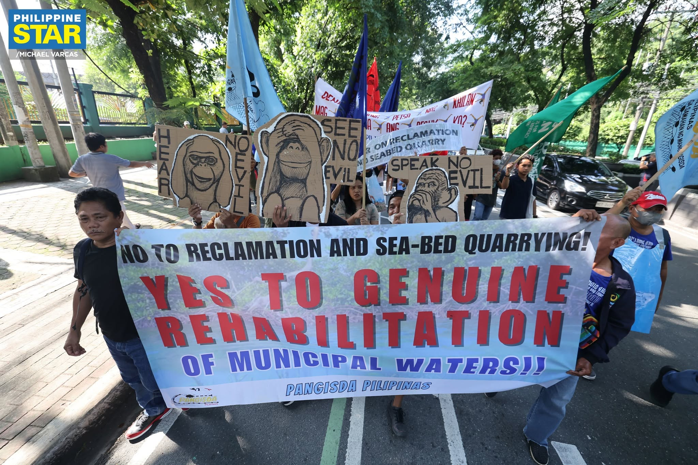
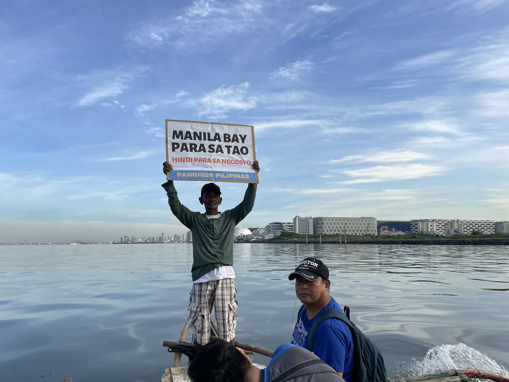
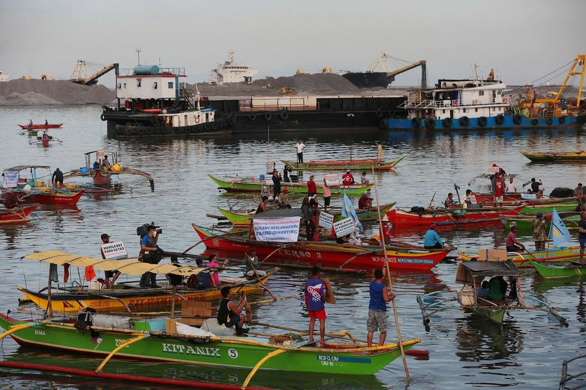

Pangisda Pilipinas’ position
The alliance opposes reclamation and seabed quarrying projects across the Philippines. Its advocacy centers the concerns and livelihoods of small-scale fishing communities affected by coastal development.
Citizen reporting
Use this form to flag environmental and human-rights concerns linked to reclamation, coastal destruction, displacement, or harassment in Manila Bay communities.
Fisherfolk advocacy
Pangisda Pilipinas is a national alliance of small-scale, artisanal, and subsistence fisherfolk organizations. The coalition opposes land reclamation and seabed quarrying, particularly in Manila Bay, Bulacan, Cavite, and Zambales.
The alliance opposes reclamation and seabed quarrying projects across the Philippines. Its advocacy centers the concerns and livelihoods of small-scale fishing communities affected by coastal development.



These links provide reporting and advocacy perspectives. The legal issues and alternative rehabilitation proposals listed above are topics for further research.
Let every decision be measured by how well it serves the people and sustains the waters they depend on.
Evidence and analysis
A side-by-side summary of two Pasay examples from the Philippine Reclamation Authority (PRA) project pages. They are part of the wider Manila Bay context, not a complete bay-wide project inventory or an independent environmental, legal, or community-impact assessment.
PRA project page · 360 hectares
Central Business Park-I Island A / MOA Complex, Financial Center Area, and Cultural Center of the Philippines area
PRA project page · 265 hectares
Foreshore and offshore areas of Pasay City
Source pages reviewed 14 November 2026; progress figures above are reported by PRA as of 31 December 2025. Project areas and allocations are reproduced as agency-reported figures, not independently checked. The comparison does not establish environmental effects, legal compliance, community consent, or impacts on fishing livelihoods. These two Pasay examples are not a complete Manila Bay inventory. The dashed map shapes are illustrative placeholders; PRA project boundaries are not available. See DATA_NOTICE.md for data-use status.
The dashed shapes are illustrative placeholders and do not represent actual projects or boundaries. The two PRA records have no verified boundaries to plot.
The list contains two Pasay examples from PRA pages and three illustrative placeholders; it is not a complete Manila Bay inventory. Placeholder shapes are not real project boundaries.
Copy data/reclamation-projects.template.geojson to data/reclamation-projects.geojson, then add one verified project feature per record. Each feature needs name, status, area_ha, agency and year.